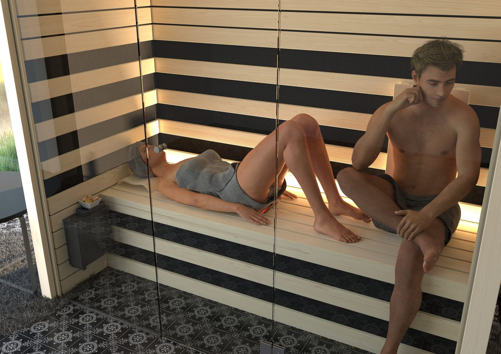
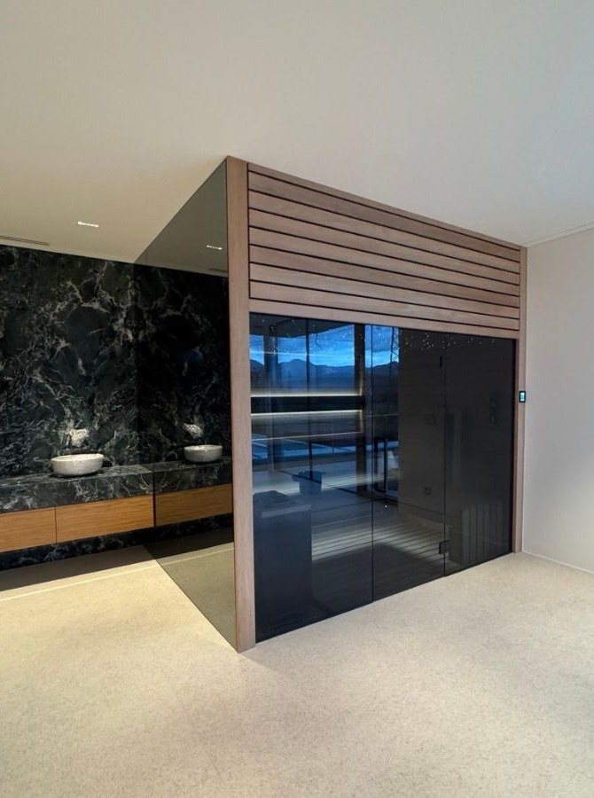

Mlado inovativno podjetje iz osrčja Slovenije, ki kreira savne za vaše dobro počutje.

Celotno ekipo povezuje skupni cilj: ustvariti najboljšo izkušnjo savnanja. Veselimo se vašega obiska!
Aleš Štrus
Odlične savne ni mogoče ustvariti brez odlične ekipe. Od strokovnjakov za načrtovanje do natančnih mizarjev smo ponosni na našo ekipo in na vsako savno, ki jo izdelamo v našem proizvodnem obratu.
Izdelovati savne, ki vam bodo nudile sprostitev in vrhunsko izkušnjo savnanja za vse življenje. Naši izdelki so trajnostni, narejeni z navdihom in strastjo.
Savne si oglejte v živo, v Šmartnem pri Litiji. Na posvetu skupaj najdemo rešitev za vaš prostor.
Rezerviraj posvet →